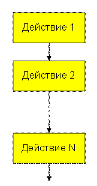
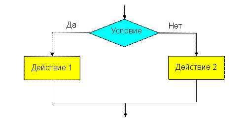
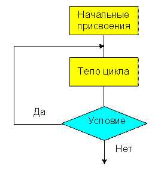
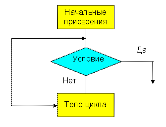
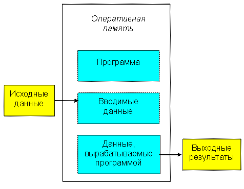
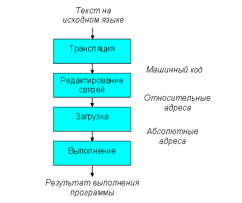

Лекция №1 (2ч)
Тема: Понятия алгоритма и языка программирования. Разновидности языков программирования. Жизненный цикл программы.
Цель лекции: Ознакомить студентов с общими понятиями програмирования. Изучить жизненный цикл программы.
Рассматриваемые вопросы:
1.Понятие алгоритма.
2.Языки программирования.
3.Процесс выполнения программы.
4.Жизненный цикл программы.
Глоссарий
Программное обеспечение — неотъемлемая часть компьютерной системы. Оно является логическим продолжением технических средств.
Машинный язык – это тот язык, который понимает ПК.
Язык программирования высокого уровня — язык программирования, разработанный для быстроты и удобства использования программистом. Языки программирования высокого уровня стремятся облегчить решение сложных программных задач.
Компоновка - использование библиотечных кодов.
1.Понятие алгоритма
Программирование – составление последовательности команд, которая необходима для решения поставленной задачи.
Программа – конечная последовательность предписаний с указанием порядка их выполнения.
В случае, когда исполнителем является компьютер, предписание называется командой, а система предписаний называется системой команд компьютера. Разные компьютеры в зависимости от их устройства могут иметь разные системы команд.
Алгоритм – это точное и понятное указание исполнителю совершить конечную последовательность действий, направленных на достижение указанной цели или на решение поставленной задачи.
Любой алгоритм обладает следующими свойствами:
1.Дискретность. Выполнение алгоритма разбивается на последовательность элементарных действий – шагов. Каждое действие должно быть закончено исполнителем прежде, чем он перейдет к выполнению следующего действия. Произвести каждое отдельное действие исполнителю предписывает специальное указание в записи алгоритма, называемое командой.
2.Точность или детерминированность. Запись алгоритма должна быть такой, чтобы, выполнив очередную команду, исполнитель точно знал, какую команду надо выполнять следующей.
3.Понятность. Каждый алгоритм строится в расчете на конкретного исполнителя, который должен быть в состоянии выполнить каждую команду алгоритма в строгом соответствии с ее назначением.
4.Результативность. При точном исполнении всех предписаний алгоритма процесс должен завершится за конечное число шагов и при этом должен быть получен какой-либо ответ на поставленную задачу. В качестве одного из возможных решений может быть установление того факта, что задача не имеет решения.
5.Массовость. С помощью одного и того же алгоритма можно решать однотипные задачи и делать это неоднократно. Свойство массовости значительно увеличивает практическую ценность алгоритмов.
Алгоритм – это правило, следовательно, оно должно быть сформулировано на некотором языке. Исходные данные и искомые результаты также должны быть описаны на некотором языке, возможно отличном от языка, на котором описан алгоритм.
Разработка алгоритма решения задачи называется алгоритмизацией. В процессе алгоритмизации задача сводится к построению последовательности шагов, расположенных в определенном порядке.
Между алгоритмами и программами нет четкого разграничения. Программой обычно называют алгоритм решения задачи, рассчитанный на исполнение его компьютером и записанный с помощью предложений используемого языка программирования.
Алгоритмической структурой называется стандартный способ соединения отдельных шагов алгоритма для выполнения типичной последовательности действий.
В теории алгоритмов доказывается, что любой алгоритм может быть представлен в виде комбинации трех алгоритмических структур: следования, условия и цикла.
Следование. Представляет собой последовательное выполнение действий.

Рис. 1.1. Следование.
Развилка. Применяется в случае, когда в зависимости от истинности некоторого логического условия необходимо выполнить, то или иное действие.

Рис. 1.2. Развилка.
Действия 1 и 2 могут, в свою очередь, включать в себя другие алгоритмические структуры.
Цикл. Применяется, когда некоторые действия необходимо выполнить несколько раз. Существуют две разновидности цикла.
Цикл До. Применяется, когда некоторые операции надо повторять до тех пор, пока некоторое условие не станет ложным.

Рис. 1.3. Цикл До.
Под начальными присвоениями подразумеваются операции присвоения исходных значений переменным, используемым в цикле. Многократно повторяемая последовательность действий называется телом цикла.
Цикл Пока. Применяется, когда некоторые операции надо повторять до тех пор, пока некоторое условие не станет истинным.

Рис. 1.4. Цикл Пока.
2.Языки программирования
Сотни имеющихся компьютерных языков могут быть разделены на 3 основных типа:
1.Машинные языки
2.Ассемблерные языки
3.Языки высокого уровня
Каждый компьютер может понимать только свой машинный язык, который является естественным языком компьютера. Машинные языки часто называют объектным кодом. В общем случае машинные языки состоят из последовательности чисел, задающих исполнение самых элементарных операций. Программирование на машинных языках было для большинства программистов слишком медленным и уязвимым для ошибок.
Основу языка ассемблера составляла англоязычная аббревиатура. Для преобразования программ написанных на таких языках в машинный язык были разработаны программы – трансляторы. С появлением языков ассемблера использование компьютеров значительно расширилось. Однако все требовалось написание большого количества инструкций даже для реализации простейших задач.
Для ускорения процесса программирования были разработаны языки высокого уровня, в которых для выполнения сложных действий достаточно написать один оператор. Программы для преобразования последовательности операторов на языке высокого уровня в машинный язык называются компиляторами. К числу наиболее мощных и широко используемых языков программирования относятся: С++, С#, Java и т.д. Процесс компиляции программы на языке высокого уровня в машинный код может занимать немалое время. В связи с этим были разработаны программы интерпретаторы, которые могут быть непосредственно хотя и более медленно выполнять программы на языках высокого уровня.
3. Процесс выполнения программы
Для того чтобы программа могла быть выполненной, она должна быть помещена в оперативную память компьютера. Туда же должны быть помещены и исходные данные. Как правило, программа вводится в оперативную память с жесткого диска. Исходные данные вводятся с клавиатуры либо также с жесткого диска, куда они должны быть заранее помещены с помощью другой программы. Результаты своей работы программа помещает в определенную область оперативной памяти, откуда они могут быть выведены на какое-либо внешнее устройство, которым может быть жесткий диск, экран дисплея, печатающее устройство.

Рис. 1.5. Распределение памяти при выполнении программы.
Процесс выполнения программы на ПК разбивается на ряд этапов.

Рис.1.6. Процесс выполнения программы на ЭВМ.
Программа пишется программистом на одном из языков программирования. Процессор ПК может реально выполнять только команды машинного языка. Преобразование исходного текста программы в машинные коды выполняется специальной программой – транслятором.
Трансляторы бывают двух видов: компиляторы и интерпретаторы.
Компилятор преобразует исходную программу на любом языке высокого уровня в некоторую стандартную форму на машинном языке, называемую объектным модулем.
Интерпретатор преобразует отдельные предложения исходного языка в машинный код и немедленно их исполняет. Интерпретатор не создает объектный модуль.
Преобразование текста на исходном языке, выполняемое транслятором, называется трансляцией. В процессе трансляции проверяется синтаксическая правильность предложений исходной программы и генерируется список обнаруженных ошибок. Некоторые части программы программист не пишет, а ссылается на них из своей программы, например, на программы управления вводом-выводом и пр. Они хранятся на внешнем запоминающем устройстве в библиотеке объектных модулей. Объектный модуль, сформированный компилятором, не может быть выполнен без объединения с этими модулями.
Программа, которая связывает независимо оттранслированные объектные модули в единую программу, называется редактором связей. Редактор связей имеет на входе объектные модули и генерирует на выходе загрузочный модуль, помещаемый на внешнее запоминающее устройство. Загрузочный модуль помещается в оперативную память специальной программой, называемой загрузчиком. Загрузчик определяет адрес загрузки программы в оперативную память исходя из сложившейся ситуации, помещает ее в оперативную память и передает управление на ее первую команду. Одна и та же программа при различных запусках может располагаться в различных местах оперативной памяти.
4.Жизненный цикл программы
Жизненный цикл программы – этапы, которые проходит программный продукт в процессе проектирования и последующей поддержки в период его использования. Таким образом, жизненный цикл программы – это последовательность шагов, которые следует предпринять для разработки программы.
Можно выделить 6 этапов разработки программы:
1.Запись алгоритма на языке программирования.
2.Создание программы – состоит в редактировании файла с помощью программы редактора.
3.Компиляция программы – процесс перевода текста программы в машинный код. Производится тестирование и отладка программы.
4.Процесс использования библиотечных кодов называется компоновкой (linking).
5.Загрузка.
6.Исполнение.
Например, написать программу, которая, используя, оператор cin позволяет вводить данные с клавиатуры.
#include <iostream>
using namespace std;
int main ()
{
char name[20];
cout<<"Kak vashe imya ";
cin>>name;
cout<<"Privet "<<name<<endl;
system("PAUSE");
return 0;
}
В результате тестирования программы происходит чтение данных с клавиатуры и выводится соответствующее значение.
Контрольные вопросы:
1.Что называется алгоритмом? Что такое программа?
2. Какими свойствами обладает алгоритм?
3.Какие три алгоритмические структуры существуют?
4.На какие 3 типа подразделяются основные языки программирования?
5.Как происходит процесс выполнения программы?
6.На какие два класса делятся трансляторы?
7.Что называется компиляцией? Что такое компоновка?
8.На какие этапы подразделяется жизненный цикл программы?
Литература
1.Хортон А. Visual 2010: полный курс.:Пер. с анг.-М.:ООО «И.Д.Вильямс», 2011г , 1216 с.: ил.
2.Пахомов Б.И. С/C++ и MS Visual C++ 2010 для начинающих. – СПб.:БХВ-Петербург, 2011.-736 с.:ил.
3.Зиборов В. В. MS Visual C++ 2010 в среде.NET. Библиотека программиста. — СПб.: Питер,
2012. — 320 с.: ил.
4.Прохоренок Н.А. Программирование на С++ в Visual Studio 2010 Express, - СПб.: Питер, 2011г , 71 с.: ил.
5.Степаненко О.Е. VisualC++.NET.Классикапрограммирования.:-М:Научнаякнига,К.;Бу-кипист,2010.—768с.